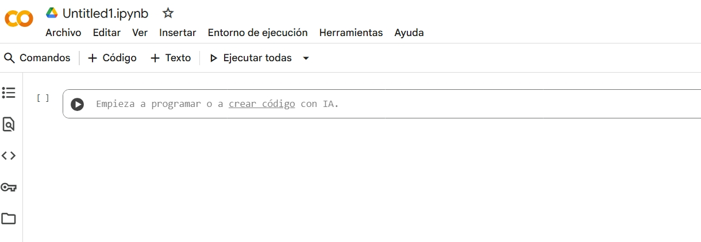

Sprint 2: Creación de modelos
En el sprint anterior hemos visto los conceptos básicos de Machine Learning. En este segundo sprint vamos a ver cómo crear nuestros propios modelos de Machine Learning utilizando herramientas accesibles y gratuitas.
Sesión 1. Perceptrón y Google Colab
El aprendizaje automático, conocido en inglés como Machine Learning (ML), es un subcampo de la inteligencia artificial que se centra en el desarrollo de algoritmos y modelos que permiten a las máquinas aprender de los datos y realizar predicciones o tomar decisiones sin ser programadas explícitamente para cada tarea. Podríamos considerar qué es un nuevo paradigma de programación, en el que en lugar de escribir código para resolver un problema, se entrena un modelo con datos relevantes para que aprenda a resolverlo.
Dentro del Machine Learning, podríamos distinguir tres paradigmas principales de aprendizaje:
-
Aprendizaje supervisado: En este paradigma, el modelo se entrena con un conjunto de datos etiquetados, es decir, cada entrada tiene una salida correspondiente conocida. El objetivo es que el modelo aprenda a mapear las entradas a las salidas correctas. Por ejemplo, un modelo de clasificación de imágenes que aprende a identificar diferentes tipos de objetos en fotos etiquetadas.
-
Aprendizaje no supervisado: En este caso, el modelo se entrena con datos no etiquetados y debe encontrar patrones o estructuras subyacentes en los datos por sí mismo. Un ejemplo común es el clustering, donde el modelo agrupa datos similares sin conocer las categorías de antemano. Las plataformas de comercio electrónico utilizan esta técnica para ver tus hábitos de navegación y compra, agrupándote con otros usuarios que comparten intereses similares. Esto ayuda a crear una experiencia de compra personalizada, mostrándote productos que coincidan con lo que te gusta, sin que nadie le diga al sistema en qué categorías caes.
-
Aprendizaje por refuerzo: Aquí, el modelo aprende a tomar decisiones mediante la interacción con un entorno. Recibe recompensas o castigos en función de sus acciones y ajusta su comportamiento para maximizar las recompensas a lo largo del tiempo. Este paradigma es común en juegos y robótica. Ejemplos de aprendizaje por refuerzo incluyen; juegos de estrategia como StarCraft o ajedrez, donde los jugadores de IA aprenden a través de la experiencia y la retroalimentación.Y vehículos autónomos que aprenden a navegar en entornos complejos mediante la interacción con el entorno y la retroalimentación recibida.
1.1 ¿Qué son las redes neuronales?
Las redes neuronales son un conjunto de algoritmos inspirados en la estructura y funcionamiento del cerebro humano, diseñados para reconocer patrones y aprender de los datos. Están compuestas por capas de nodos (o "neuronas") qu7e procesan la información y transmiten señales a través de conexiones ponderadas.

Esquema red neuronal. Fuente IDECOR
Las redes neuronales artificiales de más de una capa se conocen como redes neuronales profundas o Deep Learning. Estas redes son capaces de aprender representaciones jerárquicas de los datos, lo que las hace especialmente efectivas para tareas complejas como el reconocimiento de imágenes, el procesamiento del lenguaje natural y la traducción automática.
Podríamos pensar que la red neuronal es como una red de filtros. Pensando en el reconocimiento de datos, y siguiendo la analogia de la red de filtros, una primera capa detectaría formas simples (líneas, colores), la siguiente combinaría esas formas para detectar patrones más complejos (círculos, cuadrados), y las últimas capas identificarían un objeto completo (un gato, una persona).
Para entender mejor cómo funcionan las redes neuronales, es útil conocer algunos conceptos clave, empeceomos con un perceptrón simple.
1.2 El perceptrón
El perceptrón no es otra cosa que la red neuronal más simple. Su función es actuar como un algoritmo de clasificación binaria, es decir, un sistema que toma una decisión y da una respuesta de "si" o "no" (representado por 1 o 0).

Expliquemos inicialmente cómo funciona un perceptrón con un ejemplo cotidiano. Imaginemos que el Perceptrón debe decidir si vamos a la playa o no, basándose en tres factores:
- x1: ¿Está soleado? (1 para sí, 0 para no)
- x2: ¿Es fin de semana? (1 sí, 0 no)
- x3: ¿Tenemos trabajo pendiente? (1 sí, 0 no)
Cada entrada tiene un peso (w1,w2,w3) que representa su importancia. Por ejemplo, "hace sol" (w1=0.6) puede ser más importante que "ser fin de semana" (w2=0.4). "Tener trabajo" sería un inhibidor, así que tendría un peso negativo (w3=−0.8). ElBias (b), también conocido como sesgo o umbral, se podría entender como la predisposición de la persona a ir a la playa, por ejemplo, si le encanta la playa, el sesgo sería un valor muy alto, ya que iría a la playa aunque no se den las condiciones ideales. Si es una persona anti-playa*, el bias sería un número negativo, ya que no iría a la playa aunque se den las condiciones ideales.
Una vez conocidos los pesos y el sesgo, el Perceptrón realiza una suma ponderada de las entradas: \(z=(x1⋅w1)+(x2⋅w2)+(x3⋅w3)+b\). Finalmente, una función de activación (en el Perceptrón simple, sería una función escalón), decide si vamos o no a la playa:,
- Si \(z>0\), entonces la salida es 1 (vamos a la playa).
- Si \(z\leq0\), entonces la salida es 0 (no vamos a la playa).
Antes de profundizar en el funcionamiento del perceptrón, es fundamental conocer una herramienta clave: Google Colab. Esta plataforma resulta especialmente útil para estudiantes de bachillerato, ya que permite programar en Python, analizar datos y visualizar resultados de manera sencilla. Google Colab es ideal para proyectos educativos y experimentos prácticos, y se utiliza ampliamente en el aprendizaje de Machine Learning. Ofrece acceso gratuito a recursos computacionales avanzados y un entorno colaborativo donde se pueden crear, compartir y ejecutar cuadernos interactivos, lo que facilita y acelera el proceso de aprendizaje y experimentación en inteligencia artificial.
Google Colab: Primeros pasos
- Accede a Google Colab.
- Crea un nuevo cuaderno (notebook).
]
Google Colab se basa en Jupyter Notebooks, una herramienta muy popular en la comunidad de ciencia de datos y aprendizaje automático. Permite escribir y ejecutar código Python en un entorno interactivo, combinando código, texto, ecuaciones y visualizaciones en un solo documento.
Un cuaderno Jupyter se compone de Celdas que pueden contener código o texto.
-
Inserta una celda de texto y escribe como título
## Mi primer cuaderno en Google Colab. En la parte derecha de la celda observas un icono de lápiz, que indica que la celda está en modo edición. Haz clic en el icono para salir del modo edición y ver el formato aplicado.
-
En el siguiente enlace tienes un tutoríal básico sobre el lenguaje de marcado Markdown, que es el que se utiliza para dar formato al texto en las celdas de texto de los cuadernos Jupyter: Markdown Guide
-
Crea otra celda de texto con un subtítulo de nivel 3 y haz una enumeración de los parámetros del perceptrón que hemos visto (entradas, pesos, sesgo, función de activación).
-
Inserta una celda de tipo texto y escribe la formula de la suma ponderada del perceptrón haciendo uso de la nomenclatura matemática de LaTeX que puedes encontrar en la sección de Ecuaciones del enlace anterior.
- Nombra tu cuaderno como "MiPrimerCuaderno.ipynb". Guardalo en tu Google Drive.
- Añade una celda de código y copia el siguiente código para calcular la salida del perceptrón en función de las entradas, pesos y sesgo que hemos visto en el ejemplo de ir a la playa. Ejecuta la celda para ver el resultado.
# Definición de entradas
x1 = 1 # Está soleado
x2 = 1 # Es fin de semana
x3 = 0 # No tenemos trabajo pendiente
# Definición de pesos
w1 = 0.6 # Peso para "Está soleado"
w2 = 0.4 # Peso para "Es fin de semana"
w3 = -0.8 # Peso para "No tenemos trabajo pendiente"
# Definición del sesgo
b = 0.2 # Sesgo
# Cálculo de la suma ponderada
z = (x1 * w1) + (x2 * w2) + (x3 * w3) + b
# Función de activación (función escalón)
output = 1 if z > 0 else 0
print("Salida del perceptrón (1: Vamos a la playa, 0: No vamos a la playa):", output)
Sesión 2, 3: Introducción a Python.
Python es un lenguaje de programación muy popular debido a su simplicidad y versatilidad. Es ampliamente utilizado en ciencia de datos, desarrollo web, automatización y, por supuesto, en Machine Learning. Algunas de las características que hacen que Python sea ideal para principiantes incluyen:
- Sintaxis sencilla: La sintaxis de Python es clara y fácil de leer, lo que facilita el aprendizaje para los principiantes.
- Gran comunidad: Python tiene una comunidad activa que ofrece una gran cantidad de recursos, tutoriales y bibliotecas.
- Bibliotecas para Machine Learning: Python cuenta con numerosas bibliotecas especializadas en Machine Learning, como TensorFlow, Keras, Scikit-learn y PyTorch, que facilitan la implementación de modelos complejos.
- Entornos interactivos: Herramientas como Jupyter Notebooks y Google Colab permiten a los usuarios escribir y ejecutar código en un entorno interactivo, lo que es ideal para el aprendizaje y la experimentación.
AC - Primeros pasos con Python en Google Colab
Vais a trabajar de forma individual en un cuaderno interactivo de Google Colab llamado "Introducción a Python". Este cuaderno contiene explicaciones y 12 pequeños ejercicios prácticos distribuidos en seis bloques temáticos: operadores, listas, cadenas, condicionales, bucles y funciones.
- Abre un nuevo cuaderno en Google Colab.
- Crea una celda de texto y escribe el título
# Introducción a Python. - Vamos a crear una sección de nivel 2 para cada uno de los bloques temáticos. Crea una celda de texto y escribe
## Operadores. - A continuación, crea una celda de código e implementa los ejercicios del bloque de operadores. Puedes consultar el cuaderno de referencia Python basics - Google Colab.
- Repite el proceso para los otros cinco bloques temáticos: listas, cadenas, condicionales, bucles y funciones.
- Guarda el cuaderno en tu Google Drive con el nombre "Introducción a Python.ipynb".
OPERADORES ARITMÉTICOS
Los operadores aritméticos nos permiten realizar cálculos matemáticos.
-
Actividad 1 (Operadores): Calculadora de Área y Perímetro. Crea un programa que calcule el área y el perímetro de un rectángulo. Define dos variables, base y altura, con los valores que tú elijas. Luego, muestra los resultados por pantalla con un mensaje claro (ej. "El área del rectángulo es: X").
-
Actividad 2 (Operadores): Conversor de Temperatura Escribe un programa que convierta una temperatura de grados Celsius a Fahrenheit. La fórmula es: F=(C×9/5)+32. Asigna un valor a una variable celsius y muestra el resultado en Fahrenheit.
LISTAS
Las listas son colecciones ordenadas y modificables de elementos. Se definen con corchetes [] y los elementos se separan por comas.
- Actividad 3 (Listas): La Lista de la Compra. Crea una lista llamada lista_compra con tres productos que necesites comprar. Añade un cuarto producto al final de la lista. Elimina el segundo producto de la lista. Muestra la lista final por pantalla.
- Actividad 4 (Listas): Calculadora de Nota Media. Crea una lista con 5 notas numéricas (de 0 a 10). Calcula la nota media y muéstrala por pantalla. Pista: puedes usar las funciones sum() para sumar los elementos y len() para saber cuántos elementos hay.
CADENAS
Las cadenas son secuencias de caracteres, como palabras o frases. Se definen con comillas simples ' o dobles ".
-
Actividad 5: Creador de Saludos. Define dos variables de tipo cadena, una para un nombre y otra para una ciudad. Concaténalas para crear una frase que diga "Hola, [nombre] de [ciudad]. ¡Bienvenido/a a Python!".
-
Actividad 6: Contador de Vocales. Dada una cadena de texto, cuenta cuántas veces aparece la vocal 'a' (mayúscula o minúscula). Pista: convierte primero toda la cadena a minúsculas con el método
.lower(). Para contar, puedes usar el método.count().
CONDICIONALES
Los condicionales (if, elif, else) nos permiten ejecutar un bloque de código solo si se cumple una determinada condición.
- Actividad 7: ¿Par o Impar?. Escribe un programa que, dado un número, determine si es par o impar. Si el resto de dividir el número entre 2 es 0, es par. De lo contrario, es impar. Muestra un mensaje apropiado en cada caso.
- Actividad 8: Sistema de Calificación. Crea un programa que, dada una nota numérica (de 0 a 10), indique si el alumno ha "Aprobado" (si la nota es 5 o superior) o "Suspendido" (si es menor de 5).
BUCLES
Los bucles nos permiten repetir un bloque de código varias veces. Los más comunes son el bucle for (para recorrer elementos) y el bucle while (mientras se cumpla una condición).
- Actividad 9: La Tabla de Multiplicar. Escribe un programa que muestre la tabla de multiplicar del número 7 (del 1 al 10). Usa un bucle
fory la funciónrange(). - Actividad 10: Suma de Elementos de una Lista. Dada una lista de números, utiliza un bucle
forpara sumar todos sus elementos y muestra el total. No utilices la funciónsum().
FUNCIONES
Las funciones son bloques de código reutilizables que realizan una tarea específica. Se definen con def y pueden recibir parámetros y devolver resultados.
-
Actividad 11: Saludo Personalizado. Crea una función llamada
saludarque reciba un nombre como parámetro y muestre por pantalla un saludo personalizado, como "¡Hola, [nombre]! Que tengas un gran día.". Llama a la función con tu propio nombre. -
Actividad 12: Calculadora de Factorial. Crea una función que calcule el factorial de un número. El factorial de un número n (escrito como n!) es la multiplicación de todos los números enteros desde 1 hasta n. Por ejemplo, 5! = 1 * 2 * 3 * 4 * 5 = 120.
Sesión 4: Fundamentos de Numpy
NumPy es una de las bibliotecas de Python más populares para la computación científica y el análisis de datos. Las estructuras de datos básicas en NumPy son las matrices N-dimensionales. Para empezar a trabajar con NumPy, primero debe instalar la biblioteca e importarla a su entorno de trabajo.
AC-Instalación de NumPy
Para instalar NumPy, abre tu terminal y ejecuta el siguiente comando: pip install numpy
Si trabajas en Google Colab, NumPy ya viene preinstalado, por lo que solo necesitas importarlo en tu cuaderno con el siguiente comando:
import numpy as np
AC - Primeros pasos con NumPy
Haciendo uso del cuaderno de Google Colab que has creado en la sesión anterior, añade una nueva sección de nivel 2 con el título ## Introducción a NumPy. A continuación, realiza las siguientes actividades:
- Importa la biblioteca NumPy con el alias
np. - Crea un array unidimensional (vector) con los números del 1 al 10.
- Crea un array bidimensional (matriz) de 3x3 con números aleatorios entre 0 y 1.
- Realiza una operación matemática simple, como sumar 5 a cada elemento del array unidimensional.
- Calcula la media y la desviación estándar del array bidimensional.
- Guarda el cuaderno en tu Google Drive.
Referencia básica: